When it comes to personal finance and the accumulation of wealth, few subjects are more talked about than stocks. It's easy to understand why: playing the stock market is thrilling. But on this financial roller-coaster ride, we all want to experience the ups without the downs.
In this tutorial, we examine some of the most popular strategies for finding good stocks (or at least avoiding bad ones). In other words, we'll explore the art of stock-picking - selecting stocks based on a certain set of criteria, with the aim of achieving a rate of return that is greater than the market's overall average.
Before exploring the vast world of stock-picking methodologies, we should address a few misconceptions. Many investors new to the stock-picking scene believe that there is some infallible strategy that, once followed, will guarantee success. There is no foolproof system for picking stocks! If you are reading this tutorial in search of a magic key to unlock instant wealth, we're sorry, but we know of no such key.
This doesn't mean you can't expand your wealth through the stock market. It's just better to think of stock-picking as an art rather than a science. There are a few reasons for this:
1. So many factors affect a company's health that it is nearly impossible to construct a formula that will predict success. It is one thing to assemble data that you can work with, but quite another to determine which numbers are relevant.
2. A lot of information is intangible and cannot be measured. The quantifiable aspects of a company, such as profits, are easy enough to find. But how do you measure the qualitative factors, such as the company's staff, its competitive advantages, its reputation and so on? This combination of tangible and intangible aspects makes picking stocks a highly subjective, even intuitive process.
3. Because of the human (often irrational) element inherent in the forces that move the stock market, stocks do not always do what you anticipate they'll do. Emotions can change quickly and unpredictably. And unfortunately, when confidence turns into fear, the stock market can be a dangerous place.
The bottom line is that there is no one way to pick stocks. Better to think of every stock strategy as nothing more than an application of a theory - a "best guess" of how to invest. And sometimes two seemingly opposed theories can be successful at the same time. Perhaps just as important as considering theory, is determining how well an investment strategy fits your personal outlook, time frame, risk tolerance and the amount of time you want to devote to investing and picking stocks.
At this point, you may be asking yourself why stock-picking is so important. Why worry so much about it? Why spend hours doing it? The answer is simple: wealth. If you become a good stock-picker, you can increase your personal wealth exponentially. Take Microsoft, for example. Had you invested in Bill Gates' brainchild at its IPO back in 1986 and simply held that investment, your return would have been somewhere in the neighborhood of 35,000% by spring of 2004. In other words, over an 18-year period, a $10,000 investment would have turned itself into a cool $3.5 million! (In fact, had you had this foresight in the bull market of the late '90s, your return could have been even greater.) With returns like this, it's no wonder that investors continue to hunt for "the next Microsoft".
Without further ado, let's start by delving into one of the most basic and crucial aspects of stock-picking: fundamental analysis, whose theory underlies all of the strategies we explore in this tutorial (with the exception of the last section on technical analysis). Although there are many differences between each strategy, they all come down to finding the worth of a company. Keep this in mind as we move forward.
Ever hear someone say that a company has "strong fundamentals"? The phrase is so overused that it's become somewhat of a cliché. Any analyst can refer to a company's fundamentals without actually saying anything meaningful. So here we define exactly what fundamentals are, how and why they are analyzed, and why fundamental analysis is often a great starting point to picking good companies.
The Theory
Doing basic fundamental valuation is quite straightforward; all it takes is a little time and energy. The goal of analyzing a company's fundamentals is to find a stock's intrinsic value, a fancy term for what you believe a stock is really worth - as opposed to the value at which it is being traded in the marketplace. If the intrinsic value is more than the current share price, your analysis is showing that the stock is worth more than its price and that it makes sense to buy the stock.
Although there are many different methods of finding the intrinsic value, the premise behind all the strategies is the same: a company is worth the sum of its discounted cash flows. In plain English, this means that a company is worth all of its future profits added together. And these future profits must be discounted to account for the time value of money, that is, the force by which the $1 you receive in a year's time is worth less than $1 you receive today. (For further reading, see Understanding the Time Value of Money).
The idea behind intrinsic value equaling future profits makes sense if you think about how a business provides value for its owner(s). If you have a small business, its worth is the money you can take from the company year after year (not the growth of the stock). And you can take something out of the company only if you have something left over after you pay for supplies and salaries, reinvest in new equipment, and so on. A business is all about profits, plain old revenue minus expenses - the basis of intrinsic value.
Greater Fool Theory
One of the assumptions of the discounted cash flow theory is that people are rational, that nobody would buy a business for more than its future discounted cash flows. Since a stock represents ownership in a company, this assumption applies to the stock market. But why, then, do stocks exhibit such volatile movements? It doesn't make sense for a stock's price to fluctuate so much when the intrinsic value isn't changing by the minute.
The fact is that many people do not view stocks as a representation of discounted cash flows, but as trading vehicles. Who cares what the cash flows are if you can sell the stock to somebody else for more than what you paid for it? Cynics of this approach have labeled it the greater fool theory, since the profit on a trade is not determined by a company's value, but about speculating whether you can sell to some other investor (the fool). On the other hand, a trader would say that investors relying solely on fundamentals are leaving themselves at the mercy of the market instead of observing its trends and tendencies.
This debate demonstrates the general difference between a technical and fundamental investor. A follower of technical analysis is guided not by value, but by the trends in the market often represented in charts. So, which is better: fundamental or technical? The answer is neither. As we mentioned in the introduction, every strategy has its own merits. In general, fundamental is thought of as a long-term strategy, while technical is used more for short-term strategies. (We'll talk more about technical analysis and how it works in a later section.)
Putting Theory into Practice
The idea of discounting cash flows seems okay in theory, but implementing it in real life is difficult. One of the most obvious challenges is determining how far into the future we should forecast cash flows. It's hard enough to predict next year's profits, so how can we predict the course of the next 10 years? What if a company goes out of business? What if a company survives for hundreds of years? All of these uncertainties and possibilities explain why there are many different models devised for discounting cash flows, but none completely escapes the complications posed by the uncertainty of the future.
Let's look at a sample of a model used to value a company. Because this is a generalized example, don't worry if some details aren't clear. The purpose is to demonstrate the bridging between theory and application. Take a look at how valuation based on fundamentals would look:
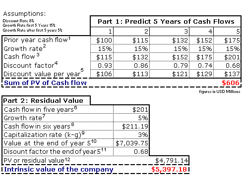The problem with projecting far into the future is that we have to account for the different rates at which a company will grow as it enters different phases. To get around this problem, this model has two parts: (1) determining the sum of the discounted future cash flows from each of the next five years (years one to five), and (2) determining 'residual value', which is the sum of the future cash flows from the years starting six years from now.
In this particular example, the company is assumed to grow at 15% a year for the first five years and then 5% every year after that (year six and beyond). First, we add together all the first five yearly cash flows - each of which are discounted to year zero, the present - in order to determine the present value (PV). So once the present value of the company for the first five years is calculated, we must, in the second stage of the model, determine the value of the cash flows coming from the sixth year and all the following years, when the company's growth rate is assumed to be 5%. The cash flows from all these years are discounted back to year five and added together, then discounted to year zero, and finally combined with the PV of the cash flows from years one to five (which we calculated in the first part of the model). And voilà! We have an estimate (given our assumptions) of the intrinsic value of the company. An estimate that is higher than the current market capitalization indicates that it may be a good buy. Below, we have gone through each component of the model with specific notes:
What happens in these situations? Other valuation options include analyzing net income, free cash flow, EBITDA and a series of other financial measures. There are advantages and disadvantages to using any of these metrics to get a glimpse into a company's intrinsic value. The point is that what represents cash flow depends on the situation. Regardless of what model is used, the theory behind all of them is the same.
Fundamental analysis has a very wide scope. Valuing a company involves not only crunching numbers and predicting cash flows but also looking at the general, more subjective qualities of a company. Here we will look at how the analysis of qualitative factors is used for picking a stock.
Management
The backbone of any successful company is strong management. The people at the top ultimately make the strategic decisions and therefore serve as a crucial factor determining the fate of the company. To assess the strength of management, investors can simply ask the standard five Ws: who, where, what, when and why?
Who?
Do some research, and find out who is running the company. Among other things, you should know who its CEO, CFO, COO and CIO are. Then you can move onto the next question.
Where?
You need to find out where these people come from, specifically, their educational and employment backgrounds. Ask yourself if these backgrounds make the people suitable for directing the company in its industry. A management team consisting of people who come from completely unrelated industries should raise questions. If the CEO of a newly-formed mining company previously worked in the industry, ask yourself whether he or she has the necessary qualities to lead a mining company to success.
What and When?
What is the management philosophy? In other words, in what style do these people intend to manage the company? Some managers are more personable, promoting an open, transparent and flexible way of running the business. Other management philosophies are more rigid and less adaptable, valuing policy and established logic above all in the decision-making process. You can discern the style of management by looking at its past actions or by reading the annual report's management, discussion & analysis (MD&A) section. Ask yourself if you agree with this philosophy, and if it works for the company, given its size and the nature of its business.
Once you know the style of the managers, find out when this team took over the company. Jack Welch, for example, was CEO of General Electric for over 20 years. His long tenure is a good indication that he was a successful and profitable manager; otherwise, the shareholders and the board of directors wouldn't have kept him around. If a company is doing poorly, one of the first actions taken is management restructuring, which is a nice way of saying "a change in management due to poor results". If you see a company continually changing managers, it may be a sign to invest elsewhere.
At the same time, although restructuring is often brought on by poor management, it doesn't automatically mean the company is doomed. For example, Chrysler Corp was on the brink of bankruptcy when Lee Iacocca, the new CEO, came in and installed a new management team that renewed Chrysler's status as a major player in the auto industry. So, management restructuring may be a positive sign, showing that a struggling company is making efforts to improve its outlook and is about to see a change for the better.
Why?
A final factor to investigate is why these people have become managers. Look at the manager's employment history, and try to see if these reasons are clear. Does this person have the qualities you believe are needed to make someone a good manager for this company? Has s/he been hired because of past successes and achievements, or has s/he acquired the position through questionable means, such as self-appointment after inheriting the company? (For further reading, see: Get Tough on Management Puff and Evaluating a Company's Management.)
Know What a Company Does and How it Makes Money
A second important factor to consider when analyzing a company's qualitative factors is its product(s) or service(s). How does this company make money? In fancy MBA parlance, the question would be "What is the company's business model?"
Knowing how a company's activities will be profitable is fundamental to determining the worth of an investment. Often, people will boast about how profitable they think their new stock will be, but when you ask them what the company does, it seems their vision for the future is a little blurry: "Well, they have this high-tech thingamabob that does something with fiber-optic cables… ." If you aren't sure how your company will make money, you can't really be sure that its stock will bring you a return.
One of the biggest lessons taught by the dotcom bust of the late '90s is that not understanding a business model can have dire consequences. Many people had no idea how the dotcom companies were making money, or why they were trading so high. In fact, these companies weren't making any money; it's just that their growth potential was thought to be enormous. This led to overzealous buying based on a herd mentality, which in turn led to a market crash. But not everyone lost money when the bubble burst: Warren Buffett didn't invest in high-tech primarily because he didn't understand it. Although he was ostracized for this during the bubble, it saved him billions of dollars in the ensuing dotcom fallout. You need a solid understanding of how a company actually generates revenue in order to evaluate whether management is making the right decisions. (For more on this, see Getting to Know Business Models.)
Industry/Competition
Aside from having a general understanding of what a company does, you should analyze the characteristics of its industry, such as its growth potential. A mediocre company in a great industry can provide a solid return, while a mediocre company in a poor industry will likely take a bite out of your portfolio. Of course, discerning a company's stage of growth will involve approximation, but common sense can go a long way: it's not hard to see that the growth prospects of a high-tech industry are greater than those of the railway industry. It's just a matter of asking yourself if the demand for the industry is growing.
Market share is another important factor. Look at how Microsoft thoroughly dominates the market for operating systems. Anyone trying to enter this market faces huge obstacles because Microsoft can take advantage of economies of scale. This does not mean that a company in a near monopoly situation is guaranteed to remain on top, but investing in a company that tries to take on the "500-pound gorilla" is a risky venture.
Barriers against entry into a market can also give a company a significant qualitative advantage. Compare, for instance, the restaurant industry to the automobile or pharmaceuticals industries. Anybody can open up a restaurant because the skill level and capital required are very low. The automobile and pharmaceuticals industries, on the other hand, have massive barriers to entry: large capital expenditures, exclusive distribution channels, government regulation, patents and so on. The harder it is for competition to enter an industry, the greater the advantage for existing firms.
Brand Name
A valuable brand reflects years of product development and marketing. Take for example the most popular brand name in the world: Coca-Cola. Many estimate that the intangible value of Coke's brand name is in the billions of dollars! Massive corporations such as Procter & Gamble rely on hundreds of popular brand names like Tide, Pampers and Head & Shoulders. Having a portfolio of brands diversifies risk because the good performance of one brand can compensate for the underperformers.
Keep in mind that some stock-pickers steer clear of any company that is branded around one individual. They do so because, if a company is tied too closely to one person, any bad news regarding that person may hinder the company's share performance even if the news has nothing to do with company operations. A perfect example of this is the troubles faced by Martha Stewart Omnimedia as a result of Stewart's legal problems in 2004.
Don't Overcomplicate
You don't need a PhD in finance to recognize a good company. In his book "One Up on Wall Street", Peter Lynch discusses a time when his wife drew his attention to a great product with phenomenal marketing. Hanes was test marketing a product called L'eggs: women's pantyhose packaged in colorful plastic egg shells. Instead of selling these in department or specialty stores, Hanes put the product next to the candy bars, soda and gum at the checkouts of supermarkets - a brilliant idea since research showed that women frequented the supermarket about 12 times more often than the traditional outlets for pantyhose. The product was a huge success and became the second highest-selling consumer product of the 1970s.
Most women at the time would have easily seen the popularity of this product, and Lynch's wife was one of them. Thanks to her advice, he researched the company a little deeper and turned his investment in Hanes into a solid earner for Fidelity, while most of the male managers on Wall Street missed out. The point is that it's not only Wall Street analysts who are privy to information about companies; average everyday people can see such wonders too. If you see a local company expanding and doing well, dig a little deeper, ask around. Who knows, it may be the next Hanes.
Conclusion
Assessing a company from a qualitative standpoint and determining whether you should invest in it are as important as looking at sales and earnings. This strategy may be one of the simplest, but it is also one of the most effective ways to evaluate a potential investment.
Value investing is one of the best known stock-picking methods. In the 1930s, Benjamin Graham and David Dodd, finance professors at Columbia University, laid out what many consider to be the framework for value investing. The concept is actually very simple: find companies trading below their inherent worth.
The value investor looks for stocks with strong fundamentals - including earnings, dividends, book value, and cash flow - that are selling at a bargain price, given their quality. The value investor seeks companies that seem to be incorrectly valued (undervalued) by the market and therefore have the potential to increase in share price when the market corrects its error in valuation.
Value, Not Junk!
Before we get too far into the discussion of value investing, let's get one thing straight. Value investing doesn't mean just buying any stock that declines and therefore seems "cheap" in price. Value investors have to do their homework and be confident that they are picking a company that is cheap given its high quality.
It's important to distinguish the difference between a value company and a company that simply has a declining price. Say for the past year Company A has been trading at about $25 per share but suddenly drops to $10 per share. This does not automatically mean that the company is selling at a bargain. All we know is that the company is less expensive now than it was last year. The drop in price could be a result of the market responding to a fundamental problem in the company. To be a real bargain, this company must have fundamentals healthy enough to imply it is worth more than $10 - value investing always compares current share price to intrinsic value not to historic share prices.
Value Investing at Work
One of the greatest investors of all time, Warren Buffett, has proven that value investing can work: his value strategy took the stock of Berkshire Hathaway, his holding company, from $12 a share in 1967 to $70,900 in 2002. The company beat the S&P 500's performance by about 13.02% on average annually! Although Buffett does not strictly categorize himself as a value investor, many of his most successful investments were made on the basis of value investing principles. (See Warren Buffett: How He Does It.)
Buying a Business, not a Stock
We should emphasize that the value investing mentality sees a stock as the vehicle by which a person becomes an owner of a company - to a value investor profits are made by investing in quality companies, not by trading. Because their method is about determining the worth of the underlying asset, value investors pay no mind to the external factors affecting a company, such as market volatility or day-to-day price fluctuations. These factors are not inherent to the company, and therefore are not seen to have any effect on the value of the business in the long run.
Contradictions
While the efficient market hypothesis (EMH) claims that prices are always reflecting all relevant information, and therefore are already showing the intrinsic worth of companies, value investing relies on a premise that opposes that theory. Value investors bank on the EMH being true only in some academic wonderland. They look for times of inefficiency, when the market assigns an incorrect price to a stock.
Value investors also disagree with the principle that high beta (also known as volatility, or standard deviation) necessarily translates into a risky investment. A company with an intrinsic value of $20 per share but is trading at $15 would be, as we know, an attractive investment to value investors. If the share price dropped to $10 per share, the company would experience an increase in beta, which conventionally represents an increase in risk. If, however, the value investor still maintained that the intrinsic value was $20 per share, s/he would see this declining price as an even better bargain. And the better the bargain, the lesser the risk. A high beta does not scare off value investors. As long as they are confident in their intrinsic valuation, an increase in downside volatility may be a good thing.
Screening for Value Stocks
Now that we have a solid understanding of what value investing is and what it is not, let's get into some of the qualities of value stocks.
Qualitative aspects of value stocks:
b) In what industries are value stocks most often located? - Although value stocks can be located anywhere, they are often located in industries that have recently fallen on hard times, or are currently facing market overreaction to a piece of news affecting the industry in the short term. For example, the auto industry's cyclical nature allows for periods of undervaluation of companies such as Ford or GM.
The P/E and PEG Ratios
Contrary to popular belief, value investing is not simply about investing in low P/E stocks. It's just that stocks which are undervalued will often reflect this undervaluation through a low P/E ratio, which should simply provide a way to compare companies within the same industry. For example, if the average P/E of the technology consulting industry is 20, a company trading in that industry at 15 times earnings should sound some bells in the heads of value investors.
Another popular metric for valuing a company's intrinsic value is the PEG ratio, calculated as a stock's P/E ratio divided by its projected year-over-year earnings growth rate. In other words, the ratio measures how cheap the stock is while taking into account its earnings growth. If the company's PEG ratio is less than one, it is considered to be undervalued.
Narrowing It Down Even Further
One well-known and accepted method of picking value stocks is the net-net method. This method states that if a company is trading at two-thirds of its current assets, no other gauge of worth is necessary. The reasoning behind this is simple: if a company is trading at this level, the buyer is essentially getting all the permanent assets of the company (including property, equipment, etc) and the company's intangible assets (mainly goodwill, in most cases) for free! Unfortunately, companies trading this low are few and far between.
The Margin of Safety
A discussion of value investing would not be complete without mentioning the use of a margin of safety, a technique which is simple yet very effective. Consider a real-life example of a margin of safety. Say you're planning a pyrotechnics show, which will include flames and explosions. You have concluded with a high degree of certainty that it's perfectly safe to stand 100 feet from the center of the explosions. But to be absolutely sure no one gets hurt, you implement a margin of safety by setting up barriers 125 feet from the explosions.
This use of a margin of safety works similarly in value investing. It's simply the practice of leaving room for error in your calculations of intrinsic value. A value investor may be fairly confident that a company has an intrinsic value of $30 per share. But in case his or her calculations are a little too optimistic, he or she creates a margin of safety/error by using the $26 per share in their scenario analysis. The investor may find that at $15 the company is still an attractive investment, or he or she may find that at $24, the company is not attractive enough. If the stock's intrinsic value is lower than the investor estimated, the margin of safety would help prevent this investor from paying too much for the stock.
Conclusion
Value investing is not as sexy as some other styles of investing; it relies on a strict screening process. But just remember, there's nothing boring about outperforming the S&P by 13% over a 40-year span!
In the late 1990s, when technology companies were flourishing, growth investing techniques yielded unprecedented returns for investors. But before any investor jumps onto the growth investing bandwagon, s/he should realize that this strategy comes with substantial risks and is not for everyone.
Value versus Growth
The best way to define growth investing is to contrast it to value investing. Value investors are strictly concerned with the here and now; they look for stocks that, at this moment, are trading for less than their apparent worth. Growth investors, on the other hand, focus on the future potential of a company, with much less emphasis on its present price. Unlike value investors, growth investors buy companies that are trading higher than their current intrinsic worth - but this is done with the belief that the companies' intrinsic worth will grow and therefore exceed their current valuations.
As the name suggests, growth stocks are companies that grow substantially faster than others. Growth investors are therefore primarily concerned with young companies. The theory is that growth in earnings and/or revenues will directly translate into an increase in the stock price. Typically a growth investor looks for investments in rapidly expanding industries especially those related to new technology. Profits are realized through capital gains and not dividends as nearly all growth companies reinvest their earnings and do not pay a dividend.
No Automatic Formula
Growth investors are concerned with a company's future growth potential, but there is no absolute formula for evaluating this potential. Every method of picking growth stocks (or any other type of stock) requires some individual interpretation and judgment. Growth investors use certain methods - or sets of guidelines or criteria - as a framework for their analysis, but these methods must be applied with a company's particular situation in mind. More specifically, the investor must consider the company in relation to its past performance and its industry's performance. The application of any one guideline or criterion may therefore change from company to company and from industry to industry.
The NAIC
The National Association of Investors Corporation (NAIC) is one of the best known organizations using and teaching the growth investing strategy. It is, as it says on its website, "one big investment club" whose goal is to teach investors how to invest wisely. The NAIC has developed some basic "universal" guidelines for finding possible growth companies - here's a look at some of the questions the NAIC suggests you should ask when considering stocks.
1. Strong Historical Earnings Growth?
According to the NAIC, the first question a growth investor should ask is whether the company, based on annual revenue, has been growing in the past. Below are rough guidelines for the rate of EPS growth an investor should look for in companies of differing sizes, which would indicate their growth investing potential:
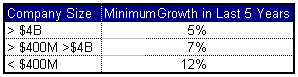Although the NAIC suggests that companies display this type of EPS growth in at least the last five years, a 10-year period of this growth is even more attractive. The basic idea is that if a company has displayed good growth (as defined by the above chart) over the last five- or 10-year period, it is likely to continue doing so in the next five to 10 years.
2. Strong Forward Earnings Growth?
The second criterion set out by the NAIC is a projected five-year growth rate of at least 10-12%, although 15% or more is ideal. These projections are made by analysts, the company or other credible sources.
The big problem with forward estimates is that they are estimates. When a growth investor sees an ideal growth projection, he or she, before trusting this projection, must evaluate its credibility. This requires knowledge of the typical growth rates for different sizes of companies. For example, an established large cap will not be able to grow as quickly as a younger small-cap tech company. Also, when evaluating analyst consensus estimates, an investor should learn about the company's industry - specifically, what its prospects are and what stage of growth it is at. (See The Stages of Industry Growth.)
3. Is Management Controlling Costs and Revenues?
The third guideline set out by the NAIC focuses specifically on pre-tax profit margins. There are many examples of companies with astounding growth in sales but less than outstanding gains in earnings. High annual revenue growth is good, but if EPS has not increased proportionately, it's likely due to a decrease in profit margin.
By comparing a company's present profit margins to its past margins and its competition's profit margins, a growth investor is able to gauge fairly accurately whether or not management is controlling costs and revenues and maintaining margins. A good rule of thumb is that if company exceeds its previous five-year average of pre-tax profit margins as well as those of its industry, the company may be a good growth candidate.
4. Can Management Operate the Business Efficiently?
Efficiency can be quantified by using return on equity (ROE). Efficient use of assets should be reflected in a stable or increasing ROE. Again, analysis of this metric should be relative: a company's present ROE is best compared to the five-year average ROE of the company and the industry.
5. Can the Stock Price Double in Five Years?
If a stock cannot realistically double in five years, it's probably not a growth stock. That's the general consensus. This may seem like an overly high, unrealistic standard, but remember that with a growth rate of 10%, a stock's price would double in seven years. So the rate growth investors are seeking is 15% per annum, which yields a doubling in price in five years.
An Example
Now that we've outlined the NAIC's basic criteria for evaluating growth stocks, let's demonstrate how these criteria are used to analyze a company, using Microsoft's 2003 figures. For the sake of this demonstration, we'll discuss these numbers as though they were Microsoft's most current figures (that is, "today's figures").
1. Five-Year Earnings Figures
|
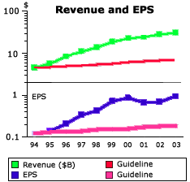
• Five-year average annual sales growth is 15.94%. • Five-year average annual EPS growth is 10.91%. |
Both of these are strong figures. The annual EPS growth is well above the 5% standard the NAIC sets out for firms of Microsoft's size.
2. Strong Projected Earnings Growth
|
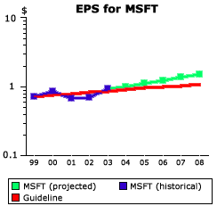
• Five-year projected average annual earnings growth is 11.03%. |
The projected growth figures are strong, but not exceptional.
3. Costs and Revenue Control
|
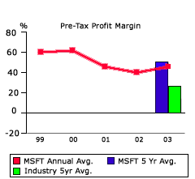
• Pre-tax margin in most recent fiscal year is 45.80%. • Five-year average fiscal pre-tax margin is 50.88%. • Industry\'s five-year average pre-tax margin is 26.7%. |
There are two ways to look at this. The trend is down 5.08% (50.88% - 45.80%) from the five-year average, which is negative. But notice that the industry's average margin is only 26.7%. So even though Microsoft's margins have dropped, they're still a great deal higher than those of its industry.
4. ROE
|
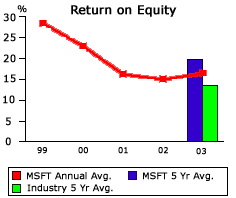
• Most recent fiscal year-end is ROE 16.40%. • Five-year average ROE is 19.80%. • Industry average five-year ROE is 13.60%. |
Again, it's a point of concern that the ROE figure is a little lower than the five-year average. However, like Microsoft's profit margin, the ROE is not drastically reduced - it's only down a few points and still well above the industry average.
5. Potential to Double in Five Years
|
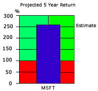
• Stock is projected to appreciate by 254.7%. |
The average analyst projections for Microsoft suggest that in five years the stock will not merely double in value, but it'll be worth 254.7% its current value.
Is Microsoft a Growth Stock?
On paper, Microsoft meets many NAIC's criteria for a growth stock. But it also falls short of others. If, for instance, we were to dismiss Microsoft because of its decreased margins and not compare them to the industry's margins, we would be ignoring the industry conditions within which Microsoft functions. On the other hand, when comparing Microsoft to its industry, we must still decide how telling it is that Microsoft has higher-than-average margins. Is Microsoft a good growth stock even though its industry may be maturing and facing declining margins? Can a company of its size find enough new markets to keep expanding?
Clearly there are arguments on both sides and there is no "right" answer. What these criteria do, however, is open up doorways of analysis through which we can dig deeper into a company's condition. Because no single set of criteria is infallible, the growth investor may want to adjust a set of guidelines by adding (or omitting) criteria. So, although we've provided five basic questions, it's important to note that the purpose of the example is to provide a starting point from which you can build your own growth screens.
Conclusion
It's not too complicated: growth investors are concerned with growth. The guiding principle of growth investing is to look for companies that keep reinvesting into themselves to produce new products and technology. Even though the stocks might be expensive in the present, growth investors believe that expanding top and bottom lines will ensure an investment pays off in the long run.
Do you feel that you now have a firm grasp of the principles of both value and growth investing? If you're comfortable with these two stock-picking methodologies, then you're ready to learn about a newer, hybrid system of stock selection. Here we take a look at growth at a reasonable price, or GARP.
What Is GARP?
The GARP strategy is a combination of both value and growth investing: it looks for companies that are somewhat undervalued and have solid sustainable growth potential. The criteria which GARPers look for in a company fall right in between those sought by the value and growth investors. Below is a diagram illustrating how the GARP-preferred levels of price and growth compare to the levels sought by value and growth investors:
What GARP Is NOT
Because GARP borrows principles from both value and growth investing, some misconceptions about the style persist. Critics of GARP claim it is a wishy-washy, fence-sitting method that fails to establish meaningful standards for distinguishing good stock picks. However, GARP doesn't deem just any stock a worthy investment. Like most respectable methodologies, it aims to identify companies that display very specific characteristics.
Another misconception is that GARP investors simply hold a portfolio with equal amounts of both value and growth stocks. Again, this is not the case: because each of their stock picks must meet a set of strict criteria, GARPers identify stocks on an individual basis, selecting stocks that have neither purely value nor purely growth characteristics, but a combination of the two.
Who Uses GARP?
One of the biggest supporters of GARP is Peter Lynch, whose philosophies we have already touched on in the section on qualitative analysis. Lynch has written several popular books, including "One Up on Wall Street" and "Learn to Earn", and in the late 1990s and early 2000 he starred in the Fidelity Investment commercials. Many consider Lynch the world's best fund manager, partly due to his 29% average annual return over a 13-year stretch from 1977-1990. (To learn more about Peter Lynch, check out Greatest Investors feature.)
The Hybrid Characteristics
Like growth investors, GARP investors are concerned with the growth prospects of a company: they like to see positive earnings numbers for the past few years, coupled with positive earnings projections for upcoming years. But unlike their growth-investing cousins, GARP investors are skeptical of extremely high growth estimations, such as those in the 25-50% range. Companies within this range carry too much risk and unpredictability for GARPers. To them, a safer and more realistic earnings growth rate lies somewhere between 10-20%.
Something else that GARPers and growth investors share is their attention to the ROE figure. For both investing types, a high and increasing ROE relative to the industry average is an indication of a superior company.
GARPers and growth investors share other metrics to determine growth potential. They do, however, have different ideas about what the ideal levels exhibited by the different metrics should be, and both types of investors have varying tastes in what they like to see in a company. An example of what many GARPers like to see is positive cash flow or, in some cases, positive earnings momentum.
Because a variety of additional criteria can be used to evaluate growth, GARP investors can customize their stock-picking system to their personal style. Exercising subjectivity is an inherent part of using GARP. So if you use this strategy, you must analyze companies in relation to their unique contexts (just as you would with growth investing). Since there is no magic formula for confirming growth prospects, investors must rely on their own interpretation of company performance and operating conditions.
It would be hard to discuss any stock-picking strategy without mentioning its use of the P/E ratio. Although they look for higher P/E ratios than value investors do, GARPers are wary of the high P/E ratios favored by growth investors. A growth investor may invest in a company trading at 50 or 60 times earnings, but the GARP investor sees this type of investing as paying too much money for too much uncertainty. The GARPer is more likely to pick companies with P/E ratios in the 15-25 range - however, this is a rough estimate, not an inflexible rule GARPers follow without any regard for a company's context.
In addition to a preference for a lower P/E ratio, the GARP investor shares the value investor's attraction to a low price-to-book ratio (P/B) ratio, specifically a P/B of below industry average. A low P/E and P/B are the two more prominent criteria with which GARPers in part mirror value investing. They may use other similar or differing criteria, but the main idea is that a GARP investor is concerned about present valuations.
By the Numbers
Now that we know what GARP investing is, let's delve into some of the numbers that GARPers look for in potential companies.
The PEG RatioThe PEG ratio may very well be the most important metric to any GARP investor, as it basically gauges the balance between a stock's growth potential and its value. (If you're unfamiliar with the PEG ratio, see: How the PEG Ratio Can Help Investors.)
GARP investors require a PEG no higher than 1 and, in most cases, closer to 0.5. A PEG of less than 1 implies that, at present, the stock's price is lower than it should be given its earnings growth. To the GARP investor, a PEG below 1 indicates that a stock is undervalued and warrants further analysis.
PEG at Work
Say the TSJ Sports Conglomerate, a fictional company, is trading at 19 times earnings (P/E = 19) and has earnings growing at 30%. From this you can calculate that the TSJ has a PEG of 0.63 (19/30=0.63), which is pretty good by GARP standards.
Now let's compare the TSJ to Cory's Tequila Co (CTC), which is trading at 11 times earnings (P/E = 11) and has earnings growth of 20%. Its PEG equals 0.55. The GARPer's interest would be aroused by the TSJ, but CTC would look even more attractive. Although it has slower growth compared to TSJ, CTC currently has a better price given its growth potential. In other words, CTC has slower growth, but TSJ's faster growth is more overpriced. As you can see, the GARP investor seeks solid growth, but also demands that this growth be valued at a reasonable price. Hey, the name does make sense!
GARP at Work
Because a GARP strategy employs principles from both value and growth investing, the returns that GARPers see during certain market phases are often different than the returns strictly value or growth investors would see at those times. For instance, in a raging bull market the returns from a growth strategy are often unbeatable: in the dotcom boom of the mid- to late-1990s, for example, neither the value investor nor the GARPer could compete. However, when the market does turn, a GARPer is less likely to suffer than the growth investor.
Therefore, the GARP strategy not only fuses growth and value stock-picking criteria, but also experiences a combination of their types of returns: a value investor will do better in bearish conditions; a growth investor will do exceptionally well in a raging bull market; and a GARPer will be rewarded with more consistent and predictable returns.
Conclusion
GARP might sound like the perfect strategy, but combining growth and value investing isn't as easy as it sounds. If you don't master both strategies, you could find yourself buying mediocre rather than good GARP stocks. But as many great investors such as Peter Lynch himself have proven, the returns are definitely worth the time it takes to learn the GARP techniques.
Income investing, which aims to pick companies that provide a steady stream of income, is perhaps one of the most straightforward stock-picking strategies. When investors think of steady income they commonly think of fixed-income securities such as bonds. However, stocks can also provide a steady income by paying a solid dividend. Here we look at the strategy that focuses on finding these kinds of stocks. (For more on fixed-income securities, see our tutorials Bond & Debt Basics and Advanced Bond Concepts.)
Who Pays Dividends?
Income investors usually end up focusing on older, more established firms, which have reached a certain size and are no longer able to sustain higher levels of growth. These companies generally no longer are in rapidly expanding industries and so instead of reinvesting retained earnings into themselves (as many high-flying growth companies do), mature firms tend to pay out retained earnings as dividends as a way to provide a return to their shareholders.
Thus, dividends are more prominent in certain industries. Utility companies, for example, have historically paid a fairly decent dividend, and this trend should continue in the future. (For more on the resurgence of dividends following the tech boom, see How Dividends Work For Investors.)
Dividend Yield
Income investing is not simply about investing in companies with the highest dividends (in dollar figures). The more important gauge is the dividend yield, calculated by dividing the annual dividend per share by share price. This measures the actual return that a dividend gives the owner of the stock. For example, a company with a share price of $100 and a dividend of $6 per share has a 6% dividend yield, or 6% return from dividends. The average dividend yield for companies in the S&P 500 is 2-3%.
But income investors demand a much higher yield than 2-3%. Most are looking for a minimum 5-6% yield, which on a $1-million investment would produce an income (before taxes) of $50,000-$60,000. The driving principle behind this strategy is probably becoming pretty clear: find good companies with sustainable high dividend yields to receive a steady and predictable stream of money over the long term.
Another factor to consider with the dividend yield is a company's past dividend policy. Income investors must determine whether a prospective company can continue with its dividends. If a company has recently increased its dividend, be sure to analyze that decision. A large increase, say from 1.5% to 6%, over a short period such as a year or two, may turn out to be over-optimistic and unsustainable into the future. The longer the company has been paying a good dividend, the more likely it will continue to do so in the future. Companies that have had steady dividends over the past five, 10, 15, or even 50 years are likely to continue the trend.
An Example
There are many good companies that pay great dividends and also grow at a respectable rate. Perhaps the best example of this is Johnson & Johnson. From 1963 to 2004, Johnson & Johnson has increased its dividend every year. In fact, if you bought the stock in 1963 the dividend yield on your initial shares would have grown approximately 12% annually. Thirty years later, your earnings from dividends alone would have rendered a 48% annual return on your initial shares!
Here is a chart of Johnson & Johnson's share price (adjusted for splits and dividend payments), which demonstrates the power of the combination of dividend yield and company appreciation:
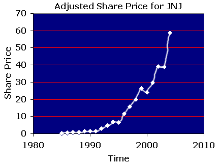This chart should address the concerns of those who simply dismiss income investing as an extremely defensive and conservative investment style. When an initial investment appreciates over 225 times - including dividends - in about 20 years, that may be about as "sexy" as it gets.
Dividends Are Not Everything
You should never invest solely on the basis of dividends. Keep in mind that high dividends don't automatically indicate a good company. Because they are paid out of a company's net income, higher dividends will result in a lower retained earnings. Problems arise when the income that would have been better re-invested into the company goes to high dividends instead.
The income investing strategy is about more than using a stock screener to find the companies with the highest dividend yield. Because these yields are only worth something if they are sustainable, income investors must be sure to analyze their companies carefully, buying only ones that have good fundamentals. Like all other strategies discussed in this tutorial, the income investing strategy has no set formula for finding a good company. To determine the sustainability of dividends by means of fundamental analysis, each individual investor must use his or her own interpretive skills and personal judgment - for this reason, we won't get into what defines a "good company".
Stock Picking, not Fixed Income
Something to remember is that dividends do not equal lower risk. The risk associated with any equity security still applies to those with high dividend yields, although the risk can be minimized by picking solid companies.
Taxes Taxes Taxes
One final important note: in most countries and states/provinces, dividend payments are taxed at the same rate as your wages. As such, these payments tend to be taxed higher than capital gains, which is a factor that reduces your overall return.
CAN SLIM is a philosophy of screening, purchasing and selling common stock. Developed by William O'Neil, the co-founder of Investor's Business Daily, it is described in his highly recommended book "How to Make Money in Stocks".
The name may suggest some boring government agency, but this acronym actually stands for a very successful investment strategy. What makes CAN SLIM different is its attention to tangibles such as earnings, as well as intangibles like a company's overall strength and ideas. The best thing about this strategy is that there's evidence that it works: there are countless examples of companies that, over the last half of the 20th century, met CAN SLIM criteria before increasing enormously in price. In this section we explore each of the seven components of the CAN SLIM system.
C = Current Earnings
O'Neil emphasizes the importance of choosing stocks whose earnings per share (EPS) in the most recent quarter have grown on a yearly basis. For example, a company's EPS figures reported in this year's April-June quarter should have grown relative to the EPS figures for that same three-month period one year ago. (If you're unfamiliar with EPS, see Types of EPS.)
How Much Growth?The percentage of growth a company's EPS should show is somewhat debatable, but the CAN SLIM system suggests no less than 18-20%. O'Neil found that in the period from 1953 to 1993, three-quarters of the 500 top-performing equity securities in the U.S. showed quarterly earnings gains of at least 70% prior to a major price increase. The other one quarter of these securities showed price increases in two quarters after the earnings increases. This suggests that basically all of the high performance stocks showed outstanding quarter-on-quarter growth. Although 18-20% growth is a rule of thumb, the truly spectacular earners usually demonstrate growth of 50% or more.
Earnings Must Be Examined Carefully
The system strongly asserts that investors should know how to recognize low-quality earnings figures - that is, figures that are not accurate representations of company performance. Because companies may attempt to manipulate earnings, the CAN SLIM system maintains that investors must dig deep and look past the superficial numbers companies often put forth as earnings figures (see How to Evaluate the Quality of EPS).
O'Neil says that, once you confirm that a company's earnings are of fairly good quality, it's a good idea to check others in the same industry. Solid earnings growth in the industry confirms the industry is thriving and the company is ready to break out.
A = Annual Earnings
CAN SLIM also acknowledges the importance of annual earnings growth. The system indicates that a company should have shown good annual growth (annual EPS) in each of the last five years.
How Much Annual Earnings Growth?It's important that the CAN SLIM investor, like the value investor, adopt the mindset that investing is the act of buying a piece of a business, becoming an owner of it. This mindset is the logic behind choosing companies with annual earnings growth within the 25-50% range. As O'Neil puts it, "who wants to own part of an establishment showing no growth"?
Wal-Mart?
O'Neil points to Wal-Mart as an example of a company whose strong annual growth preceded a large run-up in share price. Between 1977 and 1990, Wal-Mart displayed an average annual earnings growth of 43%. The graph below demonstrates how successful Wal-Mart was after its remarkable annual growth.
A Quick Re-Cap
The first two parts of the CAN SLIM system are fairly logical steps employing quantitative analysis. By identifying a company that has demonstrated strong earnings both quarterly and annually, you have a good basis for a solid stock-pick. However, the beauty of the system is that it applies five more criteria to stocks before they are selected.
N = New
O'Neil's third criterion for a good company is that it has recently undergone a change, which is often necessary for a company to become successful. Whether it is a new management team, a new product, a new market, or a new high in stock price, O'Neil found that 95% of the companies he studied had experienced something new.
McDonald'sA perfect example of how newness spawns success can be seen in McDonald's past. With the introduction of its new fast food franchises, it grew over 1100% in four years from 1967 to 1971! And this is just one of many compelling examples of companies that, through doing or acquiring something new, achieved great things and rewarded their shareholders along the way.
New Stock Price Highs
O'Neil discusses how it is human nature to steer away from stocks with new price highs - people often fear that a company at new highs will have to trade down from this level. But O'Neil uses compelling historical data to show that stocks that have just reached new highs often continue on an upward trend to even higher levels.
S = Supply and Demand
The S in CAN SLIM stands for supply and demand, which refers to the laws that govern all market activities. (For further reading on how supply and demand determine price, see our Economics Basics tutorial.)
The analysis of supply and demand in the CAN SLIM method maintains that, all other things being equal, it is easier for a smaller firm, with a smaller number of shares outstanding, to show outstanding gains. The reasoning behind this is that a large cap company requires much more demand than a smaller cap company to demonstrate the same gains.
O'Neil explores this further and explains how the lack of liquidity of large institutional investors restricts them to buying only large-cap, blue chip companies, leaving these large investors at a serious disadvantage that small individual investors can capitalize on. Because of supply and demand, the large transactions that institutional investors make can inadvertently affect share price, especially if the stock's market capitalization is smaller. Because individual investors invest a relatively small amount, they can get in or out of a smaller company without pushing share price in an unfavorable direction.
In his study, O'Neil found that 95% of the companies displaying the largest gains in share price had fewer than 25 million shares outstanding when the gains were realized.
L = Leader or Laggard
In this part of CAN SLIM analysis, distinguishing between market leaders and market laggards is of key importance. In each industry, there are always those that lead, providing great gains to shareholders, and those that lag behind, providing returns that are mediocre at best. The idea is to separate the contenders from the pretenders.
Relative Price StrengthI = Institutional SponsorshipThe relative price strength of a stock can range from 1 to 99, where a rank of 75 means the company, over a given period of time, has outperformed 75% of the stocks in its market group. CAN SLIM requires a stock to have a relative price strength of at least 70. However, O'Neil states that stocks with relative price strength in the 80–90 range are more likely to be the major gainers.
Sympathy and Laggards
Do not let your emotions pick stocks. A company may seem to have the same product and business model as others in its industry, but do not invest in that company simply because it appears cheap or evokes your sympathy. Cheap stocks are cheap for a reason, usually because they are market laggards. You may pay more now for a market leader, but it will be worth it in the end.
CAN SLIM recognizes the importance of companies having some institutional sponsorship. Basically, this criterion is based on the idea that if a company has no institutional sponsorship, all of the thousands of institutional money managers have passed over the company. CAN SLIM suggests that a stock worth investing in has at least three to 10 institutional owners.
However, be wary if a very large portion of the company's stock is owned by institutions. CAN SLIM acknowledges that a company can be institutionally over-owned and, when this happens, it is too late to buy into the company. If a stock has too much institutional ownership, any kind of bad news could spark a spiraling sell-off.
O'Neil also explores all the factors that should be considered when determining whether a company's institutional ownership is of high quality. Even though institutions are labeled "smart money", some are a lot smarter than others.
M = Market Direction
The final CAN SLIM criterion is market direction. When picking stocks, it is important to recognize what kind of a market you are in, whether it is a bear or a bull. Although O'Neil is not a market timer, he argues that if investors don't understand market direction, they may end up investing against the trend and thus compromise gains or even lose significantly.
Daily Prices and VolumesCAN SLIM maintains that the best way to keep track of market conditions is to watch the daily volumes and movements of the markets. This component of CAN SLIM may require the use of some technical analysis tools, which are designed to help investors/traders discern trends.
Conclusion
Here's a recap of the seven CAN SLIM criteria:
Remember, this is only a brief introduction to the CAN SLIM strategy; this overview covers only a fraction of the valuable information in O'Neil's book, "How to Make Money in Stocks". We recommend you read the book to fully understand the underlying concepts of CAN SLIM.
The investing strategy which focuses on Dogs of the Dow was popularized by Michael Higgins in his book, "Beating the Dow". The strategy's simplicity is one of its most attractive attributes. The Dogs of the Dow are the 10 of the 30 companies in the Dow Jones Industrial Average (DJIA) with the highest dividend yield. In the Dogs of the Dow strategy, the investor shuffles around his or her portfolio, adjusting it so that it is always equally allocated in each of these 10 stocks.
Typically, such an investor would need to completely rid his or her portfolio of about three to four stocks every year and replace them with different ones. The stocks are usually replaced because their dividend yields have fallen out of the top 10, or occasionally, because they have been removed from the DJIA altogether.
Is it Really that Simple?
Yes, this strategy really is as simple as it sounds. At the end of every year, you reassess the 30 components of the DJIA, determine which ones have the highest dividend yield, and ask your broker to make your portfolio as equally weighted in each of these 10 stocks as possible. Hold onto these 10 stocks for one calendar year, until the following Jan 1, and repeat the process. This is a long-term strategy, requiring a long period to see results. There have been a few years in which the Dow has outperformed the Dogs, so it is the long-term averages that proponents of the strategy rely on.
The Premise
The premise of this investment style is that the Dow laggards, which are temporarily out-of-favor stocks, are still good companies because they are still included in the DJIA; therefore, holding on to them is a smart idea, in theory. Once these companies rebound and the market has revalued them properly (or so you hope), you can sell them and replenish your portfolio with other good companies that are temporarily out of favor. Companies in the Dow have historically been very stable companies that can weather any market decline with their solid balance sheets and strong fundamentals. Furthermore, because there is a committee perpetually tinkering with the DJIA's components, you can rest assured that the DJIA is made up of good, solid companies.
By the Numbers
As mentioned earlier, one of the big attractions of the Dogs of the Dow strategy is its simplicity; the other is its performance. From 1957 to 2003, the Dogs outperformed the Dow by about 3%, averaging a return rate of 14.3% annually whereas the Dows averaged 11%. The performance between 1973 and 1996 was even more impressive, as the Dogs returned 20.3% annually, whereas the Dows averaged 15.8%.
Variations of the Dogs
Because of this strategy's simplicity and its returns, many have tried to alter it in an attempt to refine it, making it both simpler and higher yielding. There is the Dow 5, which includes the five Dogs of the Dow that have the lowest per share price. Then there is the Dow 4, which includes the 4 highest priced stocks of the Dow 5. Finally, there is the Foolish 4, made famous by the Motley Fool, which chooses the same stocks as the Dow 4, but allocates 40% of the portfolio to the lowest priced of these four stocks and 20% to the other three stocks.
These variations of the Dogs of the Dow were all developed using backtesting, or testing strategies on old data. The likelihood of these strategies outperforming the Dogs of the Dow or the DJIA in the future is very uncertain; however, the results of the backtesting are interesting. The table below is based on data from 1973-1996.
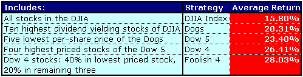Before you go out and start applying one of these strategies, consider this: picking the highest yielding stocks makes some intuitive sense, but picking stocks based strictly on price seems odd. Share price is a fairly relative thing; a company could split its shares but still be worth the same, simply having twice as many shares with half the share price. When it comes to the variations on the Dogs of the Dow, there are many more questions than there are answers.
Dogs Not Fool Proof
As is the case with the other strategies we've looked at, the Dogs of the Dow strategy is not fool-proof. The theory puts a lot of faith in the assumption that the time period from the mid-20th century to the turn of the 21st century will repeat itself over the long run. If this assumption is accurate, the Dogs will provide about a 3% greater return than the Dow, but this is by no means guaranteed.
Conclusion
The Dogs of the Dow is a simple and effective strategy based on the results of the last 50 years. Pick the 10 highest yielding stocks of the 30 Dow stocks, and weigh your portfolio equally among them, adjusting the portfolio annually, and you can expect about a 3% outperformance of the Dow. That is, if history repeats itself.
Technical analysis is the polar opposite of fundamental analysis, which is the basis of every method explored so far in this tutorial. Technical analysts, or technicians, select stocks by analyzing statistics generated by past market activity, prices and volumes. Sometimes also known as chartists, technical analysts look at the past charts of prices and different indicators to make inferences about the future movement of a stock's price.
Philosophy of Technical Analysis
In his book, "Charting Made Easy", technical analysis guru John Murphy introduces readers to the study of technical analysis, explaining its basic premises and tools. Here he explains the underlying theories of technical analysis:
"Chart analysis (also called technical analysis) is the study of market action, using price charts, to forecast future price direction. The cornerstone of the technical philosophy is the belief that all factors that influence market price - fundamental information, political events, natural disasters, and psychological factors - are quickly discounted in market activity. In other words, the impact of these external factors will quickly show up in some form of price movement, either up or down."The most important assumptions that all technical analysis techniques are based upon can be summarized as follows:
What Technical Analysts Don't Care About
Pure technical analysts couldn't care less about the elusive intrinsic value of a company or any other factors that preoccupy fundamental analysts, such as management, business models or competition. Technicians are concerned with the trends implied by past data, charts and indicators, and they often make a lot of money trading companies they know almost nothing about.
Is Technical Analysis a Long-Term Strategy?
The answer to the question above is no. Definitely not. Technical analysts are usually very active in their trades, holding positions for short periods in order to capitalize on fluctuations in price, whether up or down. A technical analyst may go short or long on a stock, depending on what direction the data is saying the price will move. (For further reading on active trading and why technical analysis is appropriate for a short-term strategy, see Defining Active Trading.)
If a stock does not perform the way a technician thought it would, he or she wastes little time deciding whether to exit his or her position, using stop-loss orders to mitigate losses. Whereas a value investor must exercise a lot of patience and wait for the market to correct its undervaluation of a company, the technician must possess a great deal of trading agility and know how to get in and out of positions with speed.
Support and Resistance
Among the most important concepts in technical analysis are support and resistance. These are the levels at which technicians expect a stock to start increasing after a decline (support), or to begin decreasing after an increase (resistance). Trades are generally entered around these important levels because they indicate the way in which a stock will bounce. They will enter into a long position if they feel a support level has been hit, or enter into a short position if they feel a resistance level has been struck.
Here is an illustration of where technicians might set support and resistance levels:
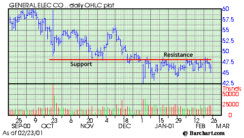Picking Stocks with Technical Analysis
Technicians have a very full toolbox. They literally have hundreds of indicators and chart patterns to use for picking stocks. However, it is important to note that no one indicator or chart pattern is infallible or absolute; the technician must interpret indicators and patterns, and this process is more subjective than formulaic. Let's briefly examine a couple of the most popular chart patterns (of price) that technicians analyze.
Cup and HandleThis is a bullish pattern that looks like a pot with a handle. The stock price is expected to break out at the end of the handle, so by buying here, investors are able to make a lot of money. Another reason for this pattern's popularity is how easy it is to spot. Here is an example of a great cup and handle pattern:
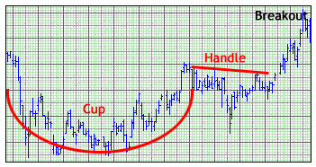Head and Shoulders
This pattern resembles, well, a head with two shoulders. Technicians usually consider this a bearish pattern. Below is a great example of this particular chart pattern:
Remember, these two examples are mere glimpses into the vast world of technical analysis and its techniques. We couldn't have a complete stock picking tutorial without mentioning technical analysis, but this brief intro barely scratches the surface.Conclusion
Technical analysis is unlike any other stock-picking strategy - it has its own set of concepts, and it relies on a completely different set of criteria than any strategy employing fundamental analysis. However, regardless of its analytical approach, mastering technical analysis requires discipline and savvy, just like any other strategy.
Let's run through a quick recap of the foundational concepts that we covered in our look at the most well-known stock-picking strategies and techniques:
{kind=link}
{kind=link}
{kind=link}
{kind=link}
{kind=link}
{kind=link}
{kind=link}
{kind=link}
{kind=link}
{kind=link}
{kind=link}
{kind=link}
{kind=link}
{kind=link}
{kind=link}